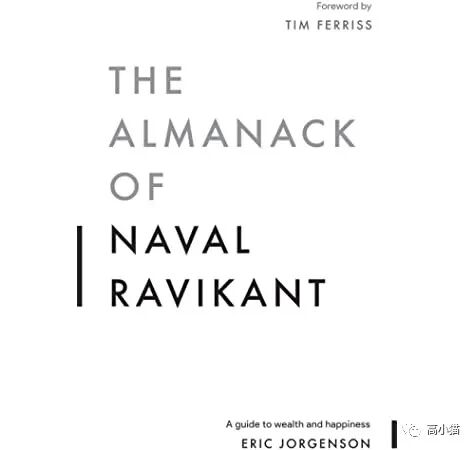

--点击左上蓝字“高小猫”关注我---
微信号：gaoxiaomao88

最近在读The Almannack of Naval Ravikant这本书，感觉学到蛮多的，所以这周的文章就来写个读书笔记。
Naval这个人是一个印度第一代移民，也是AngelList的创始人。同时他也是一个很成功的投资人，投资了Twitter，Uber，Yammer等成功的企业，也很早就开始投资加密货币。
他个人一直在Twitter上面分享一些感悟，然后就有人把他所有的Twitter上面的话编撰成一本书，就是这本The Almannack of Naval Ravikant，感觉有点像是论语有没有。
书的形式确实也是很像论语，东一句西一句的。对于不同的事情，都是一两句总结性的观点。
有些观点还蛮有意思的，我就列一些我觉得很有意思，比较认同的，如果大家感兴趣的话可以去看原书，点击左下角的阅读原文可以免费下载。
财富
财富和钱是两个概念。
钱是转移财富的一种方式，但是财富仅仅指那些在你睡觉的时候也能帮你赚钱的资产。
这个概念在《穷爸爸与富爸爸》那本书里也被反复提到过。
如果一笔钱仅仅是放在银行里，在当今这个时代仅仅能获得一些微不足道的利息，这样的钱不能算是财富，而是负的财富。因为它在你睡觉的时候偷偷地帮你亏钱。
《穷爸爸与富爸爸》这本书里，提到了几个值得留意的资产：有成长潜力的股票，有增值潜力的房产，高回报的note（一种特殊的高息房产债券）。
我个人觉得一笔投资，只有年化超过10%，才能算是一种资产。
杠杆
在我们生活的这个时代，到处都是杠杆。
一种形式的杠杆是人力资源。
比如当你手下管10个人的时候，你的产出会被这些人对应地放大。这也是为什么manager通常要比手下的员工pay得要高。
不过人力资源这种杠杆并不是一种特别好的杠杆，因为管理人非常难，需要相当大的领导力。
我觉得尤其是在欧美的企业文化中，基层员工的声音会更有影响力，因此管理的岗位做起来会更难，要考虑的因素更多。
还有一种形式的杠杆是资金杠杆。你的所有的投资决定，加上杠杆以后，都可以被放大数倍。
在过去的100年里，很多人依靠资金的杠杆变得非常地富有。
在所有的大型跨国企业中，那些CEO的主要工作其实是金融的工作。他们为企业借来钱，然后用加上资金杠杆的方式来扩大企业的收益。
如果你可以让很好地管理这些资金，你就可以借来越来越多的资金，巴菲特就是一个很好的例子。
最后一种主要的杠杆是：任何可以低成本大量复制的产品。书籍，音频，视频，代码（可能还有机器人？）都是类似于这样的产品。
在这些东西中，代码可能是最有力量的一种杠杆。这个时代的新贵都是利用了这种杠杆（当然他们也用上了资金和人力的杠杆）。亚马逊，Facebook，Google都是这样的企业。
他们的代码一旦写出来，就可以无成本地服务越来越多的人。所以只要产品足够好，最终就可以占领非常非常大的市场，获取极大的收益。
对于最后这种杠杆，好处是你无须任何人的同意就可以用它。而对于人力杠杆，你需要有人同意为你工作，你才能用到这种杠杆。对于资金杠杆，你需要有人愿意借给你钱。
专注
在现代机会实在太多太多，但是我们人的时间是有限的，不可能抓住所有的机会。
因此我们需要对自己的时间进行估价，并且以此作为行动的准则，在必要的时候花钱来节省你自己的时间。
你应该为自己设置一个非常高的hourly rate，并且你需要坚持这个rate。
如果说你要花一个小时，去另外一个地方取一个东西。如果你觉得你一个小时值100美金，你其实可以想想看，是不是要花100美金来换那个东西，还是其实有更便宜的方式可以拿到这个东西。
对于Naval来说，他很早就把自己的时间定为5000美金/小时。
当然后来他回头来看，其实他这么多年，平均来说赚到的大约是1000美金/小时。不过当时定的高一点也有他的合理性，可以逼迫他自己更多地把事情放在重要的事情上面。
他仍然还是会做一些蠢事，比如和电工还价，或者去把坏掉的电器推掉。但是他做这些的时间远远要比他的朋友少很多。
如果我们可以雇人来帮我们节省我们的时间的话，这样其实是非常划算的。
判断力
提升判断力没有捷径可言。
有判断力的人往往是有清晰的思路的人，他们对于基础的知识有一种深入的理解，以至于所有复杂的概念都可以从最基本的这些知识推导出发得到。
除此以外，判断力来自现实检验能力。
很多的时候，我们会被我们的一厢情愿蒙蔽了双眼，以至于看不到现实是什么。这样一来，往往事情会被搞砸。
不过这样也有好处，当事情失败，导致我们自己痛苦的时候，也正是我们离现实最近的时候。这个时候我们被迫接受现实，而就在这个过程中，有意义的变化得以发生。
几乎所有的偏见都是一种为了节省时间而做出的近似判断。
因此对于重要的抉择，为了把这些抉择做得更准确，我们需要把我们的偏见扔掉。
如何把偏见扔掉呢？我们需要把我们的身份，我们自己的记忆都扔掉，仅仅从问题出发，一点点推导出答案。
对自己极端地诚实，不要骗自己，因为自己其实是最容易自己骗过的那一方。
=============
这本书的很多观点我觉得真的很有意思。有不少之前见过，但是重温一下也是颇有益处。
其中有一些也是知易行难，可能需要很多的练习才能慢慢掌握。还是需要时刻警醒自己。
这一期就这样啦。